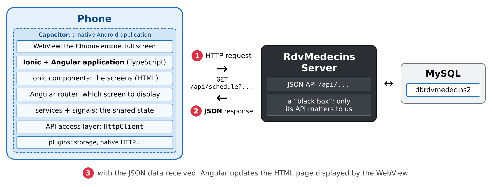

1. Introducción
El PDF del documento está AQUÍ.
El código de este documento está AQUÍ.
Este documento es un producto de la IA Claude de Anthropic. Sigue el curso “Introducción paso a paso al framework móvil Flutter”, del que toma el esquema, los ejemplos y el caso de estudio, y el curso “Introducción paso a paso al framework Angular”, del que toma las herramientas:
- En el curso de [Flutter], la aplicación es una aplicación móvil escrita en [Dart], cuyo motor, [Flutter], dibuja cada píxel por sí mismo;
- En el curso de [Angular], la aplicación es una aplicación web: HTML, CSS y [TypeScript], ejecutados por un navegador;
- En este curso, la aplicación es AMBAS cosas: una aplicación web, escrita con [Angular] y componentes del framework [Ionic], que la herramienta [Capacitor] empaqueta como una aplicación [Android] instalada en el teléfono. El mismo código, sin ningún cambio, también se ejecuta en un navegador.
Sin embargo, el servidor sigue igual: es el servidor JSON de [RdvMedecins] de las lecciones anteriores, escrito con [NestJS]. Y las pantallas de la aplicación son las que los lectores de las otras lecciones ya conocen (inicio de sesión con CAPTCHA, agenda del médico, ventana de cita, portal del paciente, gestión de médicos y clientes, creación de cuenta, francés e inglés), adaptadas a la pantalla de un teléfono.
El documento sigue la misma estructura que sus predecesores: primero, numerosos ejemplos breves, cada uno centrado en un concepto de [Ionic] o de [Angular], seguidos de un caso de estudio completo, el cliente [Ionic] de la aplicación [RdvMedecins], cuyos archivos están todos comentados. Los 25 ejemplos tienen los mismos números y muestran las mismas pantallas que los del curso de [Flutter] (y los cursos de [React] y [Vue.js] ): los lectores que conozcan alguno de estos frameworks reconocerán los mismos ejemplos, escritos al estilo de [Ionic] y [Angular]. Además, cada ejemplo concluye con una comparación con [Flutter].
Se supone que los lectores conocen los conceptos básicos del lenguaje [TypeScript] y del framework [Angular]: se tratan en los cursos “Introducción al lenguaje TypeScript mediante ejemplos” e “Introducción paso a paso al framework Angular”. No obstante, los conceptos de [Angular] que se utilizan (signals, plantillas, inyección de dependencias, enrutador, formularios reactivos, etc.) se repasan a lo largo de los ejemplos a medida que se necesitan.
1.1. El papel de Ionic en una aplicación cliente/servidor
La aplicación tiene dos partes, que se comunican entre sí únicamente mediante solicitudes HTTP:

- 1: La aplicación [Ionic], que se ejecuta en el teléfono, envía una solicitud HTTP al servidor, por ejemplo, [GET /api/schedule?doctorId=1&day=2026-10-05];
- 2: El servidor responde con datos JSON: la agenda de ese médico para ese día. No genera ninguna página;
- 3: Con estos datos, [Angular] actualiza la pantalla del teléfono.
Esta es exactamente la arquitectura de los clientes [Flutter], [React], [Vue.js] y [Angular]: la única diferencia es lo que genera la visualización. Y en este aspecto, [Ionic] es lo opuesto a [Flutter]. [Flutter] es un motor de renderizado: no depende en absoluto del navegador y dibuja por sí mismo cada píxel de la pantalla. [Ionic], en cambio, no dibuja nada: es una biblioteca de componentes web: nuevos elementos HTML ([<ion-button>], [<ion-input>], [<ion-list>], [<ion-tabs>]...), creados con la herramienta [Stencil] del equipo de [Ionic], que cualquier navegador puede mostrar. Estos componentes imitan los componentes nativos del teléfono en dos “modos”: [md] ([Material Design], el aspecto de [Android]) e [ios] (el aspecto del [iPhone]). Este curso impone el modo [md] en todas partes, incluido el navegador. Como son simples elementos HTML, los componentes de [Ionic] pueden utilizarse con [Angular], [React] o [Vue.js]: este curso los utiliza con [Angular] (el paquete [@ionic/angular]).
Por lo tanto, la aplicación es una aplicación web estándar: una página HTML, una hoja de estilos y código [JavaScript] compilado a partir de [TypeScript]. Es [Capacitor] (del mismo equipo que [Ionic]) quien la convierte en una aplicación [Android]:
- [Capacitor] genera un proyecto nativo de [Android] cuya única pantalla es un WebView: el motor del navegador [Chrome] del teléfono, a pantalla completa y sin barra de direcciones. La aplicación web compilada se copia en este proyecto y WebView la carga al iniciar. Para el usuario, es como cualquier otra aplicación: un ícono, una pantalla de inicio y el botón Atrás de [Android];
- el código [JavaScript] accede a las funciones del teléfono (almacenamiento, cámara, notificaciones, geolocalización, etc.) mediante complementos de [Capacitor], que actúan como un puente hacia el código nativo. Este curso utiliza dos de ellos: [@capacitor/preferences] (un pequeño almacén de clave-valor en el dispositivo, ejemplo 20) y [CapacitorHttp] (solicitudes HTTP realizadas por el código nativo de [Android], ejemplos 22 a 25);
- El mismo código se ejecuta en un navegador, donde los complementos tienen una versión web (el almacenamiento de [Capacitor] utiliza entonces el [localStorage] del navegador). Por eso desarrollamos en [Chrome], con el tamaño de un teléfono y sus herramientas de desarrollo, y luego pasamos a [Android] para probar.
Las tres capas de la aplicación y lo que aporta cada una:
- [Angular]: el framework de la aplicación. Proporciona los componentes (una clase [TypeScript] y una plantilla HTML), los signals (el estado, cuyos cambios actualizan la pantalla), la inyección de dependencias (servicios, estado compartido), el enrutador (una dirección por pantalla), los formularios, el cliente HTTP y los “pipes” (formateo). Los lectores del curso de [Flutter] reconocerán el principio: la interfaz es una función del estado. Nunca modificamos la pantalla directamente: cambiamos el estado y [Angular] actualiza todo lo que depende de él;
- [Ionic]: los componentes de interfaz, que se parecen a los de una aplicación móvil (barras de herramientas, listas, campos, botones flotantes, pestañas, ventanas de alerta, calendario, etc.), y la navegación de una aplicación móvil: una pila de páginas, animada como en [Android], de la que el botón Atrás saca la página superior;
- [Capacitor]: la aplicación [Android] y el acceso al teléfono.
A diferencia de [Flutter], no se necesitan paquetes adicionales para la comunicación con un servidor: [Angular] proporciona el cliente HTTP, el enrutador, los formularios y la inyección de dependencias; [JavaScript], junto con el objeto [Intl], proporciona el formateo de fechas y números para cada idioma; la biblioteca [RxJS], incluida con [Angular], proporciona flujos de datos asíncronos. Las traducciones (ejemplo 21) las gestiona una pequeña clase escrita específicamente para este fin, que lee los diccionarios JSON.
1.2. Herramientas utilizadas
Los ejemplos se escribieron y probaron con las siguientes herramientas (su instalación se describe en el capítulo siguiente y en el apéndice):
- [Node.js] 24 y su administrador de paquetes [npm]: [Angular CLI] 22 requiere [Node.js] 22.22.3 (o una versión 22 más reciente), 24.15 o superior, o 26 y posteriores. [Node.js] también ejecuta el servidor JSON;
- [Angular CLI] 22.2 (el comando [ng]), [Angular] 22.2 y [TypeScript] 6.0;
- [Ionic] 9.0 (el paquete [@ionic/angular] 9.0.6) y sus íconos, [ionicons] 8.1;
- [Capacitor] 8.5 (los paquetes [@capacitor/core], [@capacitor/android] y [@capacitor/cli]) y su complemento [@capacitor/preferences] 8.0;
- el editor [Visual Studio Code] y sus extensiones [Angular Language Service] e [Ionic];
- [Android Studio], para el SDK de [Android], su JDK y su administrador de emuladores: un emulador de [Android] (un teléfono simulado en la computadora) o un teléfono [Android] real conectado a la computadora;
- el navegador [Chrome], para desarrollar y depurar la aplicación, tanto en la computadora como en el teléfono;
- el DBMS [MySQL] (o [MariaDB]), por ejemplo, el de [Laragon] en [Windows]: es necesario para el servidor JSON, como se describe en el capítulo que lo presenta;
- la herramienta de línea de comandos [curl], que muestra las respuestas HTTP sin procesar.
Los paquetes utilizados son los de los archivos [package.json] de los dos proyectos [Ionic], que son idénticos: los [@angular/...] 22.2, [@ionic/angular] 9.0, [ionicons] 8.1, [@capacitor/...] 8.5, [@capacitor/app] 8.1, [@capacitor/preferences] 8.0, [rxjs] 7.8 y, solo para desarrollo, [typescript] 6.0, [prettier] 3 (formato del código) y [playwright] 1.56 (capturas de pantalla).
1.3. Capturas de pantalla
Las capturas de pantalla de este documento se generaron automáticamente con programas que utilizan la biblioteca [Playwright] (carpetas [captures/] de ambos proyectos [Ionic]). El programa [captures/captures.mjs] controla un navegador [Chromium] (la versión gratuita de [Chrome]) con el tamaño de un teléfono [Android]: 412 x 892 puntos, a 2.625 píxeles por punto, lo que produce imágenes de 1082 x 2342 píxeles. Para cada ejemplo, ejecuta un “escenario” de la carpeta [captures/scenarios/]: abre la página del ejemplo, interactúa con ella como lo haría un usuario (escribe texto, presiona botones) y luego guarda la pantalla como un archivo de imagen.
Se trata, por lo tanto, de capturas reales de la aplicación, renderizadas por el motor de [Chrome], el mismo que utiliza el WebView del teléfono; los únicos elementos que faltan son la barra de estado del teléfono (hora, batería) y el teclado en pantalla. El lector puede recrearlas (la aplicación debe estar en ejecución; vea más abajo):
- línea 1: una sola vez: descarga el navegador [Chromium] utilizado por [Playwright];
- línea 2: recrea todas las capturas en la carpeta [captures/images/];
- línea 3: recrea únicamente las de los ejemplos 05 y 17.
Las capturas de los ejemplos 22 a 25 y del caso de estudio también requieren que el servidor JSON se esté ejecutando en “modo de prueba” para el CAPTCHA (vea el capítulo que describe el servidor).
1.4. Los ejemplos
El código de este documento está organizado en tres carpetas:
Los ejemplos forman un único proyecto, [Ionic]: una página de inicio, el menú de ejemplos y una página por ejemplo, cada una en su propia carpeta [src/app/] (el ejemplo 01 presenta el proyecto en detalle):
Las carpetas [node_modules/] (los paquetes) y [android/] (el proyecto [Android]) no se incluyen: la primera se llena con [npm install] y la segunda la genera [Capacitor]. En una consola abierta en la carpeta [examples_ionic] (en [VS Code]: menú Terminal / Nuevo terminal):
- Línea 1: una sola vez, para todos los ejemplos: descarga los paquetes descritos en [package.json] en la carpeta [node_modules/];
- línea 2: inicia [ng serve], el servidor de desarrollo de [Angular], en la dirección [http://localhost:8100].
Abra esta dirección en [Chrome]: la página de inicio muestra los 25 ejemplos, agrupados por capítulo; al tocar un ejemplo se abre, y el botón Atrás de su barra de herramientas lo devuelve al menú. También puede ir directamente a un ejemplo mediante su dirección: [http://localhost:8100/ex05] para el ejemplo 05. Para ver la aplicación con el tamaño de un teléfono, abra las herramientas de desarrollo (F12) y luego la barra de emulación de dispositivos (Ctrl+Shift+M). Mientras [ng serve] esté en ejecución, cada cambio en un archivo se compila y se aplica de inmediato en el navegador; Ctrl+C lo detiene.
En [Android], la aplicación de ejemplo se instala de una sola vez, junto con sus 25 ejemplos y el menú:
- Línea 1: se ejecuta una sola vez: crea la carpeta [android/] y un proyecto completo de [Android Studio];
- Línea 2: compila la aplicación web en la carpeta [dist/examples_ionic/browser/];
- Línea 3: la copia en el proyecto [Android];
- línea 4: construye la aplicación [Android], la instala en un emulador en ejecución o en un teléfono conectado (el comando pregunta cuál, si hay varios) y la inicia.
Las líneas 2 a 4 deben volver a ejecutarse después de cada cambio en el código. El ejemplo 01 también muestra cómo habilitar la recarga automática de [ng serve] en el teléfono.
Los ejemplos 22 a 25 consultan los servidores JSON y [RdvMedecins]: deberá tenerlos instalados y en ejecución, como se explica en el capítulo dedicado a ellos. En el navegador, el servidor de desarrollo les envía las solicitudes [/api] (archivo [proxy.conf.json]); en el emulador, se conectan al servidor en la dirección [http://10.0.2.2:8080] (vea el ejemplo 22).
1.5. Contenido del documento
Capítulo | Contenido | Ejemplos |
Primeros pasos con Ionic | un proyecto Ionic (Angular + Capacitor), componentes de Ionic, estado (signal, computed, effect), plantillas (@if, @for), eventos, todos los tipos de campos, un reducer, validación, formularios reactivos, formateo (Intl, pipes) | 01 a 09 |
Componentes | Entradas (input), salidas (output, model), composición (content projection, ng-template), ciclo de vida, inyección de dependencias (servicios, inject), directivas y animaciones, cuadro de diálogo de confirmación (AlertController) | 10 a 16 |
Enrutamiento | El enrutador de Angular e ion-router-outlet: rutas, parámetros, shell con ion-tabs, carga diferida, página 404, guardias | 17 y 18 |
Operaciones asíncronas y estado compartido | Promise, Observable (RxJS), temporizadores, antirrebote, respuestas caducadas, async pipe, toSignal, resource, un servicio basado en signals, @capacitor/preferences, tema oscuro | 19 y 20 |
Internacionalización | Una aplicación en francés e inglés | 21 |
El servidor RdvMedecins, una caja negra | Instalación del servidor JSON, su API, ejemplos con curl | - |
Interacción con el servidor | HttpClient, el proxy de desarrollo, la dirección del servidor, CapacitorHttp en Android, la cookie de token httpOnly (almacenada por el navegador o por Android), una capa de acceso a la API, errores del servidor | 22 a 25 |
Caso de estudio | el cliente Ionic de la aplicación RdvMedecins | - |
Despliegue | El cliente web compilado, servido por el servidor JSON; la aplicación Android | - |
Cada ejemplo se presenta con su código completo, comentado línea por línea, y capturas de pantalla de su ejecución. El propio código está ampliamente comentado: estos comentarios forman parte del curso.